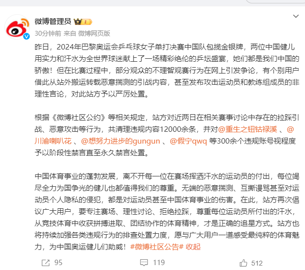
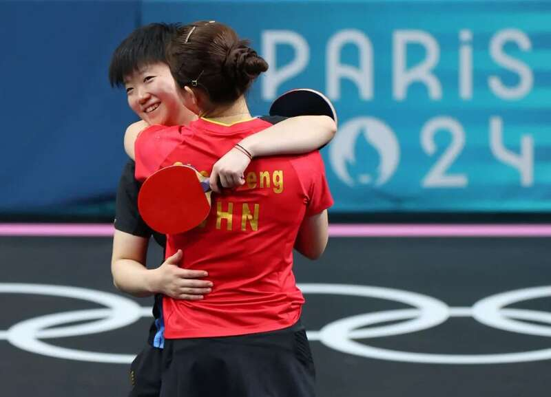
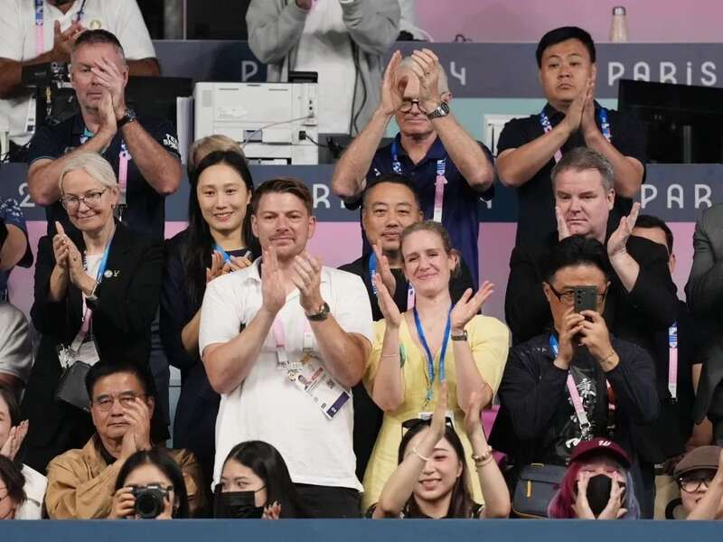
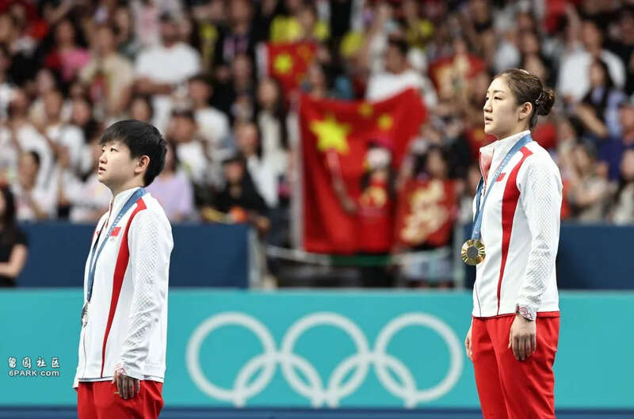
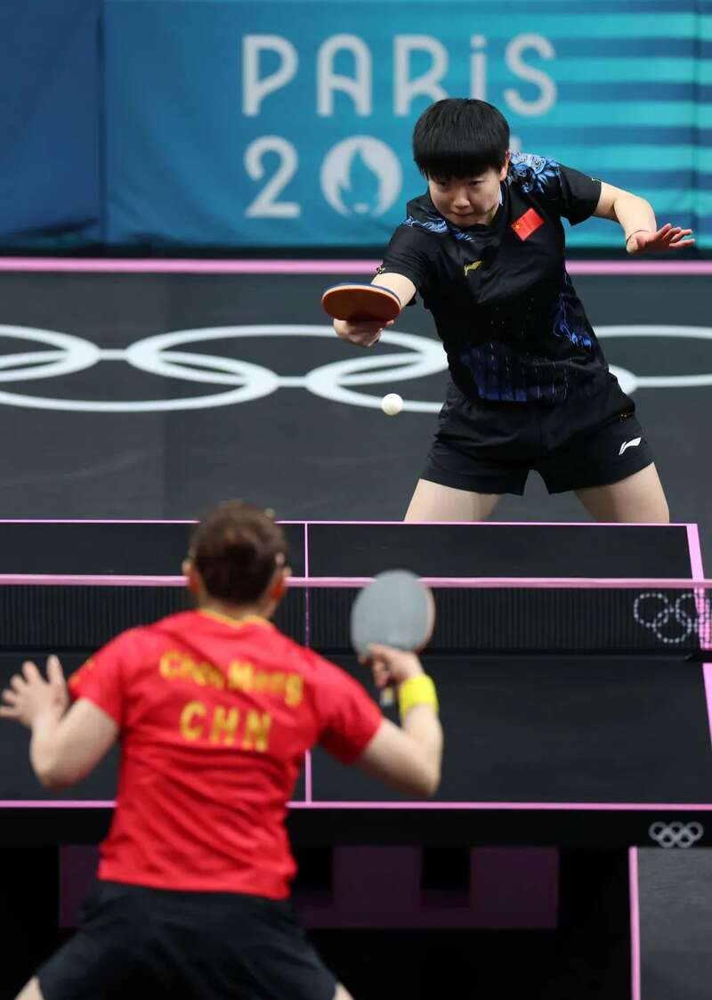
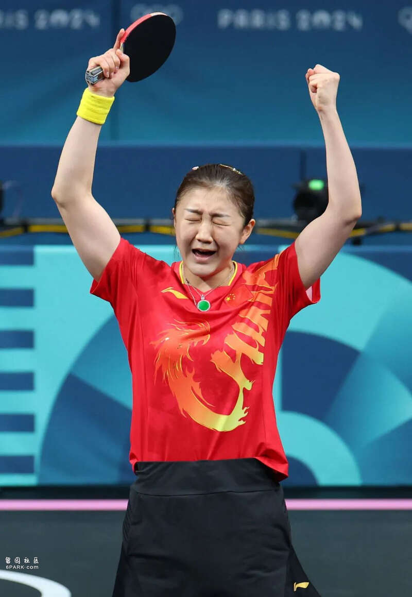
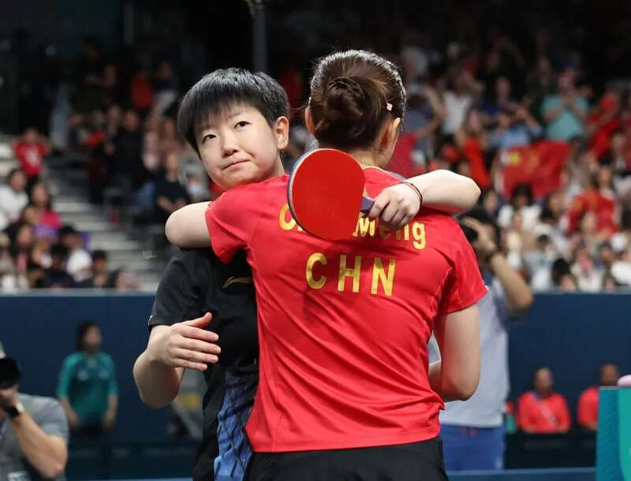

刚刚，@微博管理员发布微博：
昨日，2024年巴黎奥运会乒乓球女子单打决赛中国队包揽金银牌，两位中国健儿用实力和汗水为全世界球迷献上了一场精彩绝伦的乒坛盛宴，她们都是我们中国的骄傲！但在比赛过程中，部分观众的不理智观赛行为在网上引发争论，有个别用户借此从站外搬运转载恶意揣测的引战内容，甚至发布攻击运动员和教练组成员的非理性言论，对此站方予以严厉处置。
根据《微博社区公约》等相关规定，站方对近两日在相关赛事讨论中存在的拉踩引战、恶意攻击等行为，共清理违规内容12000余条，并对@重生之钮钴禄溪 、@川渝喇叭花 、@想努力进步的gungun 、@假宁qwq 等300余个违规账号视程度予以阶段性禁言直至永久禁言处置。
中国体育事业的蓬勃发展，离不开每一位在赛场挥洒汗水的运动员的付出，每位竭尽全力为国争光的健儿也都值得我们的尊重。无端的恶意揣测、互撕谩骂甚至对运动员个人隐私的侵犯，都是对运动员甚至中国体育事业的伤害。在此，站方再次倡议广大用户，要专注赛场、理性讨论、拒绝拉踩，尊重每位运动员所付出的汗水，从竞技体育中收获拼搏进取、团结协作的体育精神，才是正确的追星方式。站方也将持续加强各类违规行为的排查处置力度，愿与广大用户一道感受最纯粹的体育魅力，为中国奥运健儿们助威！

人民网评：最好的应援是喝彩而不是拉踩

8月3日，陈梦、孙颖莎在比赛后拥抱。新华社记者 刘续 摄
8月3日晚，巴黎奥运会乒乓球女单决赛在南巴黎竞技场结束，陈梦4比2战胜孙颖莎 ，获得金牌。但比赛中看台上有些观众的表现，厚此薄彼令人诧异，网上也出现一些批评陈梦的声音。这些现象都是“饭圈”恶习对体育运动和体育精神的侵害。
“饭圈文化”外溢到体育领域的危害有目共睹。一方面，优秀运动员在控评、接机、跟拍、打榜应援、入侵房间等行为的围追堵截之下，难言个人隐私，心理压力山大。另一方面，在“流量至上”“泛娱乐化”等畸形价值观引导下，粉丝不再关注赛事本身，而致力于为偶像博C位，无所不用其极。如此风气，曲解了奋斗的意义、稀释了荣誉的价值。
正因能量巨大，我们看到了“饭圈”互撕等刷新公众认知底线的不良行为，有必要对“饭圈外溢”的危害保持足够的警惕。“饭圈”乱象的蔓延，表面上是粉丝集体无意识行为，幕后却不乏披着粉丝外衣的利益链条上的“乱舞者”，他们在利益面前向来直接、赤裸。
作为球迷，最好的应援方式应该是先了解这项运动的观赛礼仪，然后再以合适的方式为自己喜欢的选手送上欢呼和鲜花，哪怕最后赢的不是自己的偶像，也可以大度地给予掌声，而不是一刻不停地喧闹。
新闻多看点
颁奖仪式上，陈梦站上冠军领奖台，亲吻了金牌；孙颖莎也举起银牌，与陈梦合影。
“这场决赛没有失败者。我们再一次为中国代表团拿到了金、银牌。”陈梦说。

的确，这是中国选手第十次夺得奥运会乒乓球女单冠军，自1988年汉城（首尔）奥运会乒乓球“入奥”以来，这枚金牌从未旁落。

8月3日，冠军陈梦（右）、亚军孙颖莎在颁奖仪式上。新华社记者 王东震 摄
上届东京奥运会，也是她俩打进决赛，最终陈梦胜出。时隔三年，姐俩再度顶峰相遇。
这是一场精彩的对决。比赛开始，孙颖莎率先进入状态，11:4赢下首局。次局，陈梦11:7扳平。第三局，两人频繁进入多拍僵持，孙颖莎失误较多，陈梦11:4反超。第四局，孙颖莎在10:5领先时被追至10:9，请求暂停后，她以11:9获胜，两人再度2:2战平。第五局，比分交替领先，战至9:9时，陈梦抓住机会连得两分，大比分3:2领先。关键的第六局，陈梦在9:6领先时请求暂停，之后她连拿两分，以11:6最终取胜。

8月3日，孙颖莎（上）、陈梦在比赛中。新华社记者 刘续 摄
“我们发挥得都不错，但梦姐比我想象中更坚定，她一直没有动摇。”莎莎复盘说，“我自己在第五局后程心态有些绷不住，也有点着急，没有坚持到最后。”
赛后在混合采访区，陈梦潸然泪下。“非常惊喜，感觉自己创造了不可能。赛前，我想过这场比赛是下风，没想过能赢。”陈梦说，“这两年，我跟莎莎比赛输得多，她现在的技术风格越来越先进，人也越来越成熟。”

8月3日，陈梦在夺冠后庆祝。新华社记者 刘续 摄
这些年，陈梦经历过低谷，也站上过巅峰。30岁，成为年龄最大的奥运乒乓球女单冠军，她认为自己胜在心态：“我在场上只想打好每一分，珍惜每一分，因为对我来说，奥运会不会再有下一次。”
在混采区，记者问孙颖莎：“梦姐拥抱你时，跟你说了什么？”
“她让我继续努力再来。”莎莎说，“我觉得老天是公平的，不想让我觉得自己已经强大，而是要让我再去积累和沉淀。”
“不少人与冠军不都是十年之约么？”她说。
“你拥抱莎莎时，跟她说了什么？”同一个问题，记者也问了陈梦。

8月3日，陈梦（右）和孙颖莎在赛后。新华社记者 王东震 摄
“拥抱那一刻，我跟她说‘要加油’。我觉得对运动员来说，四年虽然漫长，但只要努力不放弃，什么都可能发生。我相信，当打之年的莎莎未来会更好。”
当五星红旗冉冉升起，陈梦、孙颖莎高唱国歌，国乒女单的辉煌在此刻续写，也在此刻传承。
这是属于中国乒乓球的荣耀。